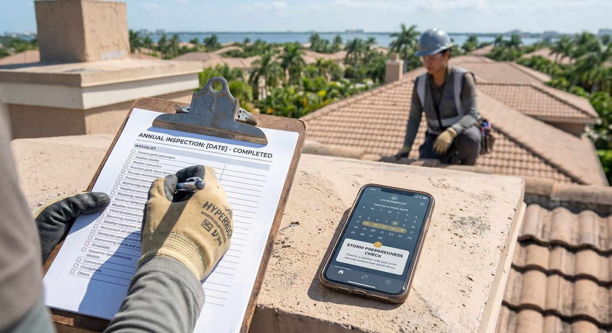

What to Do When Your Roof Starts Leaking in Miami
A roof leak is a problem that deserves attention, but the first response should be controlled rather than rushed. Your immediate priorities are protecting people, limiting additional interior damage and arranging an assessment that identifies the source of the water.
In Miami, heavy rainfall can expose weaknesses quickly, and wind-driven rain can enter through areas that may not be obvious from inside the home. The visible ceiling stain is often a symptom rather than the exact location of the roof failure.
First: protect people and the interior
If water is entering the home, keep people away from electrical hazards and areas where ceiling materials appear swollen or unstable. Move furniture and belongings away from the affected area when it is safe to do so and use containers or temporary protection to control dripping water.
Do not climb onto the roof during rain, high winds or other unsafe conditions. A wet roof can be extremely hazardous, and storm-damaged roofing may be unstable.
Try to understand when the leak appears
Note whether the leak occurs during heavy rain, wind, after a storm or only under certain conditions. This information can help a roofing professional investigate the problem, although it should not be treated as proof of the source.
Photograph interior stains and visible exterior damage from safe locations. If the leak follows a storm, keep a record of the date and conditions because that information may also be useful when documenting a potential insurance claim.
Why the ceiling stain may not match the roof problem
Water can travel along roof decking, insulation, framing and other building components before it becomes visible. That means the spot where water drips from the ceiling may be some distance from the roof penetration or failed flashing.
This is one reason simply sealing the area directly above an interior stain can fail to solve the underlying problem. A professional Miami roof inspection can help trace the problem and evaluate the surrounding roofing system.
When is a roof leak an emergency?
Urgency increases when water is entering rapidly, the roof has a large opening, structural damage is visible, major storm damage has occurred, or the home's electrical systems may be affected by water. In those situations, focus on safety and rapid professional assistance.
Our guide to emergency roof repair warning signs covers situations where waiting for routine maintenance may be inappropriate.
Should you repair or replace the roof?
A leak alone does not answer that question. A localized flashing defect or isolated damaged area may be repairable. Recurring leaks, widespread deterioration, significant storm damage or an aging roof with repeated repairs can indicate a larger replacement decision.
Read how to know if you need a new roof and compare the findings with our Miami roof repair service guide.
What if a storm caused the leak?
If the leak began after a hurricane or severe storm, document visible damage before cleanup when safe. Notify your insurer if you believe there may be a covered loss and keep receipts for reasonable temporary measures taken to prevent additional damage.
Florida's Department of Financial Services provides guidance on documenting storm losses and making reasonable emergency repairs. Review the official guidance. You can also read our Miami roof insurance claims guide.
How to prevent the next leak
The best leak-prevention strategy is not simply to seal every visible opening. It is to understand why water entered the building and address the failed component. Good drainage, functioning flashing, properly installed roof coverings and timely repairs all contribute to long-term performance.
Routine inspections can also identify deteriorating areas before they become active leaks. See how often Florida homeowners should consider roof inspections.
Frequently asked questions
Can I fix a roof leak myself?
Minor interior water-control steps may be possible, but roof work can be dangerous and identifying the actual source of a leak can be difficult. Professional assessment is safer for significant or recurring leaks.
Does a roof leak always mean the roof is old?
No. Leaks can result from flashing, penetrations, storm damage, installation defects or localized deterioration.
Should I wait until the rain stops?
For roof access, yes—do not put yourself on a wet or storm-damaged roof. You can document interior damage and arrange professional help while conditions are unsafe.
Sources and further reading
- Florida Hurricane Retrofit Guide — Roofs
- Florida Department of Financial Services — Protect
- Miami-Dade County — Roofing Permits
Related Miami roofing guides
Roof inspection · Storm damage repair · Emergency roof repair · More roofing advice